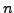
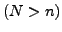
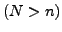

Linear Discriminant Analysis (LDA) is one of the most popular
approaches for feature extraction and dimension reduction to
overcome the curse of the dimensionality of the high-dimensional
data in many applications of data mining, machine learning, and
bioinformatics. The undersampled problem, which arises frequently
in many modern applications, involves small samples size  with
high number of features   and limits the application of
the linear discriminant analysis. In this paper, we investigate
the generalized Foley-Sammon transform (GFST,
[1,2]) and its regularization (RGFST) for
undersampled problems. The optimal linear transformations of RGFST
are characterized completely and an equivalent reduced RGFST is
established, based on which a global and superlinear convergence
algorithm is proposed. Practical implementations including
computational complexity and storage of our method are discussed
and experimental results on several real world data sets indicate
the efficiency of the algorithm and the advantages of RGFST in
classification.
 and limits the application of
the linear discriminant analysis. In this paper, we investigate
the generalized Foley-Sammon transform (GFST,
[1,2]) and its regularization (RGFST) for
undersampled problems. The optimal linear transformations of RGFST
are characterized completely and an equivalent reduced RGFST is
established, based on which a global and superlinear convergence
algorithm is proposed. Practical implementations including
computational complexity and storage of our method are discussed
and experimental results on several real world data sets indicate
the efficiency of the algorithm and the advantages of RGFST in
classification.